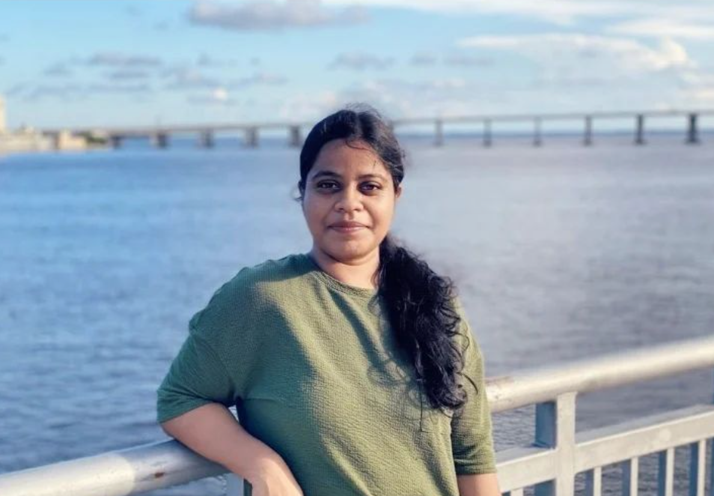

Dependable AI
How can intelligent agents be evaluated, observed, governed, and trusted when their behavior is probabilistic?
Agentic AI · Evaluation · SafetyENGINEERING / RESEARCH / WRITING
I'm Sridurga — a software engineer and researcher interested in how we build intelligent systems that are not only capable, but dependable, responsible, and useful to people.

Curiosity is a practice, not a destination. — Notes from the journey
My work spans reliability engineering, distributed systems, platform architecture, and emerging approaches to agentic AI. Over time, I've become increasingly interested in the questions behind the technology: What makes a system trustworthy? How do we introduce autonomy responsibly? And how does rapid technological change shape the people who work with it?
Alongside my engineering career, I'm pursuing doctoral studies in Engineering Management at Texas State University. I write and explore ideas across AI, organizational change, and the broader relationship between technology and society.
The views and writing shared here are my own.
Not a product catalog. A few enduring questions that guide my engineering and research.
How can intelligent agents be evaluated, observed, governed, and trusted when their behavior is probabilistic?
Agentic AI · Evaluation · SafetyWhat does it take to build platforms that remain resilient as their scale, dependencies, and complexity grow?
Distributed systems · Reliability · ArchitectureHow do new technologies reshape work, organizational behavior, employee well-being, and perceptions of security?
Engineering management · Research · SocietyResearch, essays, books, and public technical contributions — shared as they become available.
Exploring the intersection of AI adoption, organizational experience, employee well-being, and perceived job security.
Writing about the complex relationships between connected technologies, systems, and society. Publication details will be linked when available.
Selected public contributions and technical publications, including collaborative work emerging from engineering experimentation.
View a public technical contribution ↗Only public, shareable work is linked here. Employer-owned systems and confidential implementation details are intentionally excluded.
ENGINEERING
Experience across large-scale production systems, reliability engineering, automation, and platform architecture. My focus is on sound technical judgment, collaboration, and building systems that can be operated responsibly.
EDUCATION
Doctoral studies in Engineering Management at Texas State University, building on graduate study at Duke University. Interested in connecting technical depth with organizational and societal questions.
CONTINUOUS LEARNING
Continued learning in agentic AI, cloud and platform architecture, and the methods needed to study complex engineering questions rigorously.
LET'S STAY CURIOUS
Always interested in thoughtful exchanges about AI, engineering, research, and the future of work.